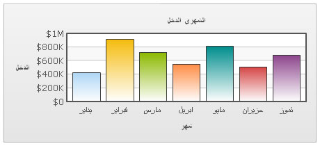

| Using Multi-lingual text in FusionGadgets |
FusionGadgets allows you to use multi-lingual (UTF-8) characters on the charts. Shown below is an example where we've used Arabic names on the chart: |
|  |
FusionGadgets supports only left-to-right languages as of now. It doesn't have native support for right-to-left languages like Hebrew. So, if you want to use Hebrew with FusionGadgets, you'll have to programatically change the text sequence and then provide the data to FusionGadgets. |
| How to use multi-lingual characters? |
To use multi-lingual characters on the chart, you necessarily need to use dataURL method. dataXML method would give "Invalid XML" error when using multi-lingual characters on certain occasions. If you're using a physical XML file, make sure it's saved in UTF-8 format. |